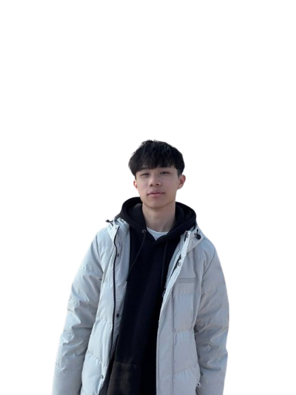
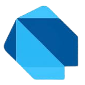
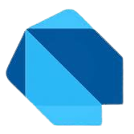

張立承
5-1 電機工程系 B11207015
5-1 電機工程系 B11207015
嘗試新事物，並且對創作作品特別有興趣


 

旅遊是種逃避現實的手段，但同時也是治癒自己解方
未來?
這堂課其實也算是誤打誤撞選進來的，但是經過了上次不管是故宮的參觀、老師家、三毛紀念館又或是順益原住民紀念館，我覺得老師是個很厲害的人 ，我相信大多數人和我一樣，在選進來前都不知道澔平老師是誰，不過就在我稍微看了一些之前的東西，還有問一些親戚才知道，原來澔平老師， 是個很有名的人，不過終究敵不過時間，慢慢的認識老師的人也越來越少，但澔平老師依舊秉持著初心，尤其是參觀到老師家時，我只能說真的要對旅行， 紀錄文物很有熱愛的人才能達到這樣，每個文物不只是包含了自己的文化，他們更是澔平老師曾經抵達過的證明，所以我真心佩服老師，也慶幸我有來上這堂課。